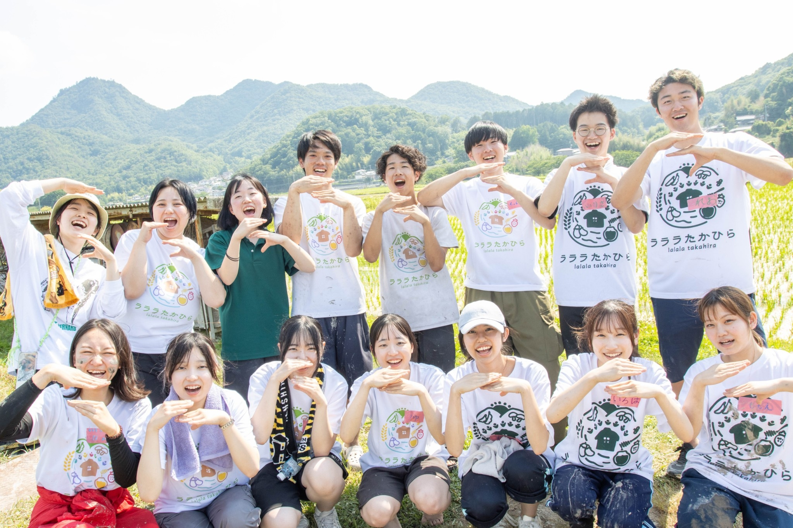
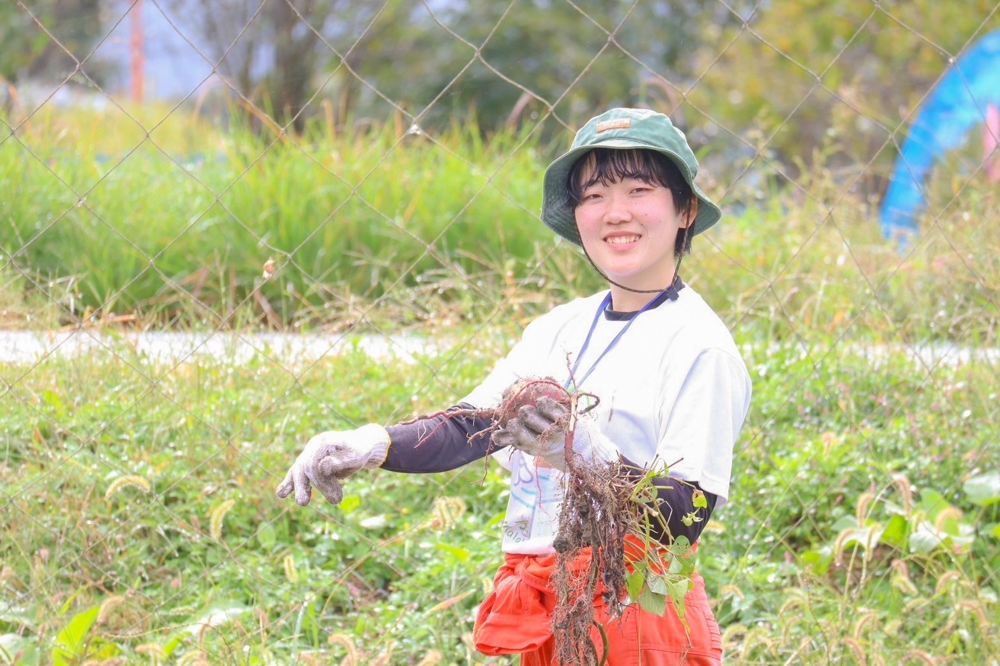
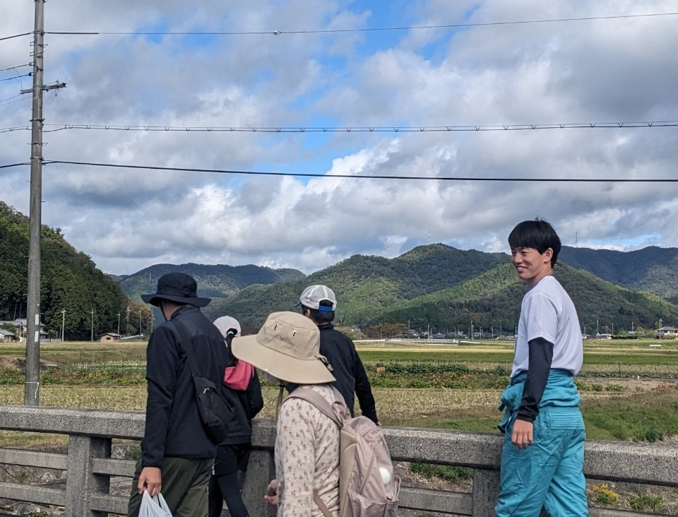
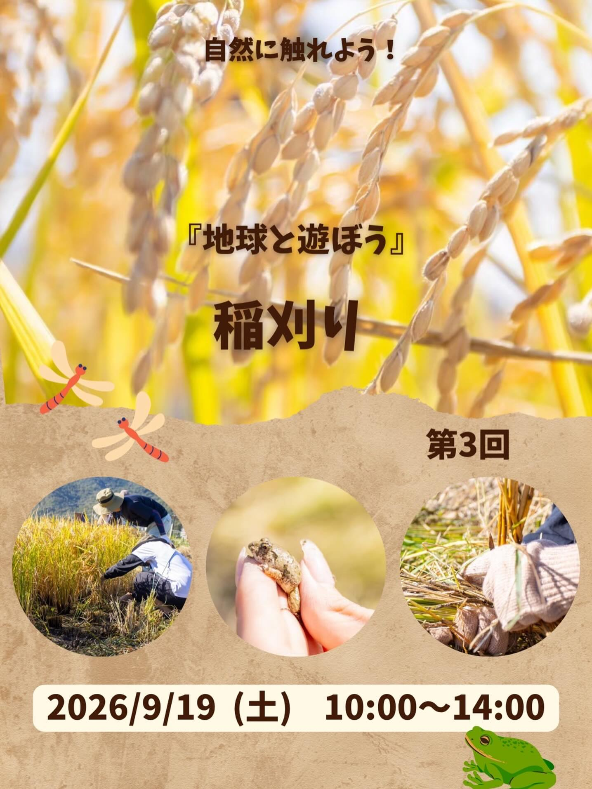
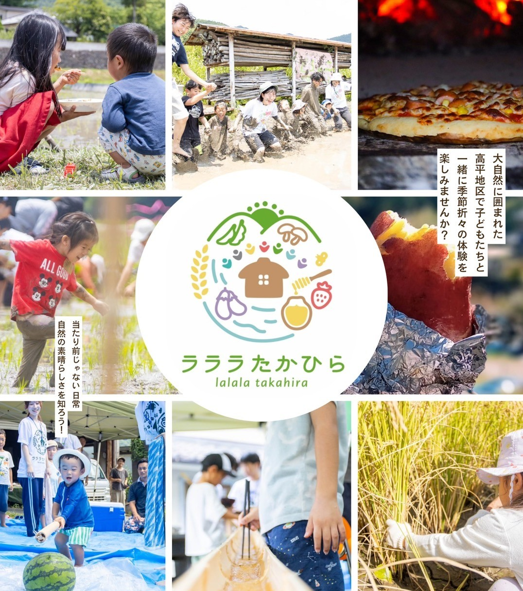
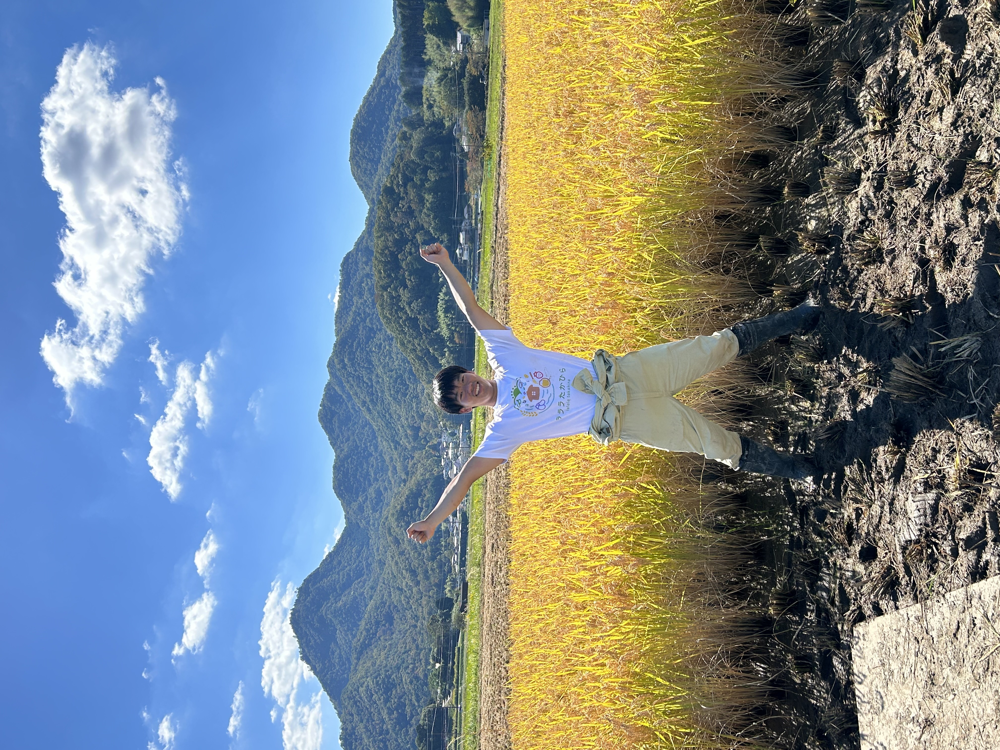

交流する
活動の出発点は、高平の方を知ること。地域の声を聞きながら、同じ目線で関係をつくります。
STUDENTS × TAKAHIRA
兵庫県三田市・高平の人と学生が一緒になって、里山の魅力を体験するイベントや、新しい発信をつくっています。




参加者募集中PICK UP EVENT ／ 地球と遊ぼう 第3回
実りの秋を迎えた田んぼで稲刈りに挑戦。薪割りや羽釜ご飯も楽しめる、自然いっぱいの一日です。
WHAT WE DO
高平を知り、好きになり、通ったり住んだりしてくれる仲間を増やすために、地域の方と一緒に活動しています。
活動の出発点は、高平の方を知ること。地域の声を聞きながら、同じ目線で関係をつくります。
SNSやWebなど学生の得意分野を活かし、里山の風景や暮らしの魅力を若い感性で届けます。
農業や自然を楽しむイベントを地域の方と企画し、高平に来て、体験するきっかけをつくります。

JOIN OUR TEAM
関西学院大学の学生を中心に活動しています。地域の人と交流したい、イベントを企画したい、何か新しいことを始めたい。そんな方を歓迎します。

MESSAGE
こんにちは関西学院大学工学部の藤越颯人です。ラララたかひらという学生団体で高平地域でイベント開催したり、SNSで魅力発信を行っています。